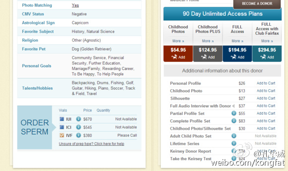

转给@老师木 看下。前段时间他为农村男青年找不到老婆不平，给骂成狗了。PS, 两个帖子下面的评论都很有看头。//@孔华威:还真是正能量的，大家可以创业@孔华威:[男生别打我]费尔法克斯精子银行www.fairfaxcryobank.com对全球女性开放，精子淘汰率高达97%以上；肤色、发色、血统完全自助，三代以内无病史，身高180以下基本不收，保证生出健康聪明漂亮的混血萝莉。歪瓜裂枣的天艹男在这些强大的基因面前根本是不可回收垃圾，而且还要倒贴子宫家务家产。 
听到有人分享网红的粉丝通投放经验，涨粉有边际递减效应，比如已经有30万粉丝了，粉丝价格会达到3元一个。如果是50万，价格是5元一个。如果已有百万粉丝，基本上已经投不出去钱了。@Ada李力:#社群运营#春节前做了个红包尝试，给一些皮肤科合作大师的微博红包里加了些赞助。等了半个月，测算了下，通过红包获取微博粉丝的成本，人均1.3元。如果是要砸钱来做数字，一百万的用户，至少要有130万的预算。而根据通用的电商转化率和利润率来算，有些可怕。